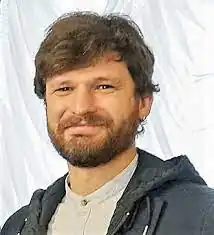

Письменник, художник-ілюстратор. Народився 12 травня 1984 року. Має дві вищі освіти: педагогічну й журналістську. КМС із велосипедного туризму.
За фахом — вчитель і журналіст, закінчив Житомирський державний університет та Львівський національний університет імені Івана Франка. Працював творчим редактором журналів Пізнайко і Професор Крейд, головним редактором проєкту для вчителів Всеосвіта.
Після оновлення шкільних навчальних програм у 2016 році твори Дмитра Кузьменка було включено до програми з літературного читання для школярів молодших класів. Автор книжок "Зубасті задачки", "Росли груші на вербі!", "Кожен може стати принцесою" (2015, у співавторстві з Євгенією Добровою), "Кожен може поцілувати принцесу", "(Я х трамвай + зоопарк)2", "Купи слона! Або Великі пригоди маленької Софійки" та "Біла трішки чорна-пречорна книжка", "Історії з чаюванням", "Абобаль→Ябобаль", "#щотакематематика?". Лауреат кількох літературних премій, двічі стипендіат програми Міністра культури і національної спадщини Республіки Польща "Gaude Polonia". Почесний амбасадор Житомирщини. Книжки: 2023 — Клімат у твоїх руках / У співавторстві з Катериною Терлецькою, ілюстраторка Ірина Вале. — Харків, Vivat. 2022 — Я і мій тато / Ілюстраторка Оксана Драчковська. — Харків, Vivat. 2022 — Я, мій тато і Висока Гора / Ілюстраторка Оксана Драчковська. — Харків, Vivat. 2022 — Кожен може назвати принцесу / Ілюстраторка Інна Черняк. — Харків, Vivat. 2021 — Неперевіршені задачі / У співавторстві з Сашком Дерманським, ілюстратор Олександр Шатохін. — Київ, Yakaboo Publishing. 2020 — Другоасики з 2-А / Ілюстраторка Євгенія Гайдамака. — Харків, Vivat. 2019 — Росли груші на вербі (в новій редакції) / Ілюстраторка Олена Шеремет. — Харків, Талант. 2019 — Зубасті задачки (в новій редакції) / Ілюстрації авторські. — Харків, Талант. 2018 — #щотакематематика? / Ілюстрації авторські, летеринг Наталії Ком'яхової. — Харків, Талант. 2018 — Абобаль→ябобаль / Ілюстрації авторські та Лії Достлєвої, летеринг Закентія Горобйова. — Харків, Талант. 2018 — Кожен може поцілувати принцесу / Ілюстраторка Інна Черняк. — Харків, Vivat. 2017 — Біла трішки чорна-пречорна книжка / Ілюстрації авторські. — Харків, Vivat. 2017 — Історії з чаюванням / Ілюстраторка Наталія Смолова. — Харків, Талант. 2016 — Купи слона! або Маленькі пригоди великої Софійки / Ілюстратор Леонід Гамарц. — Харків, Талант. 2016 — (Я ∙ трамвай + зоопарк)2 / Ілюстраторка Інна Черняк. — Харків, Vivat. 2015 — Кожен може стати принцесою / У співавторстві з Євгенією Добровою, ілюстраторка Інна Черняк. — Харків, Vivat. 2014 — Росли груші на вербі! / Ілюстраторка Оксана Здор. — Київ, Радуга. 2014 — Зубасті задачки / Ілюстрації авторські. — Львів, Видавництво Старого Лева.